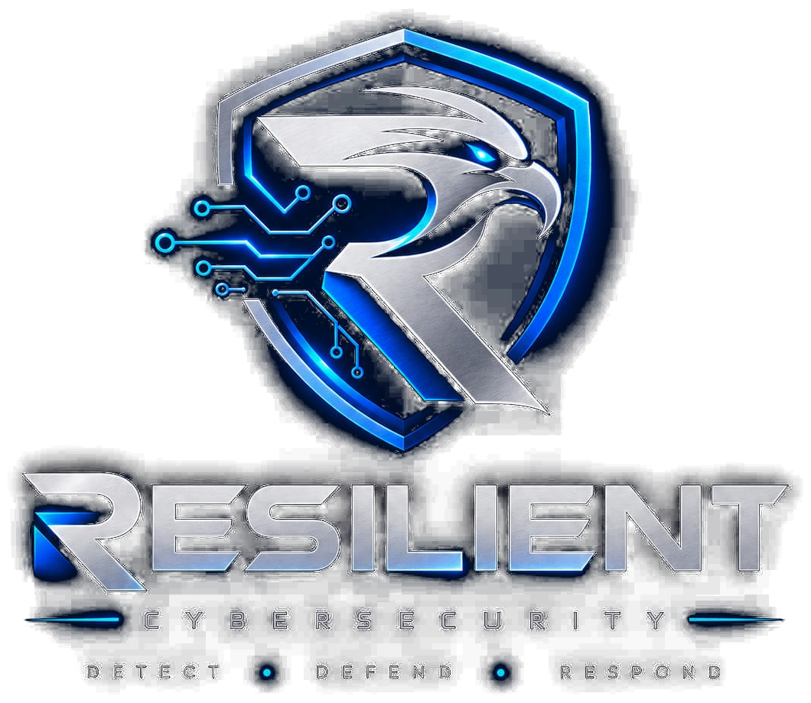

We help organizations investigate security incidents and improve the detections that catch similar activity in the future — through focused Incident Response & Digital Forensics and Detection Engineering & Rule Tuning.
Evidence-driven investigation. Practical detection engineering. Controlled validation.
Illustrative excerpt — see the sample walkthrough below for a full case.
We focus on Incident Response & Digital Forensics and Detection Engineering & Rule Tuning — rather than 24/7 SOC monitoring or managed SOC services.
Together, these capabilities support our Incident-to-Detection methodology: investigate what happened, turn findings into detection opportunities, and validate improvements where appropriate.
When something looks wrong — a suspicious login, an unexpected process, a possible compromise — most teams don't have a clear, structured way to find out what actually happened, how far it spread, and what to do next. Guessing is expensive.
We investigate the incident: preserve and analyze available evidence, reconstruct a timeline of what occurred, identify indicators of compromise, and map the attack path. The exact approach depends on the incident and what evidence is available.
An engagement typically starts with a short intake call to understand the situation, followed by evidence collection, analysis, and a findings report with clear, prioritized recommendations. Scope is agreed before work begins.
A general outline of how an investigation proceeds. The exact methodology depends on the incident and the evidence available.
We don't claim certifications, legal forensic authority, or expert-witness standing that we don't hold — findings are technical and investigative in nature, not a legal determination.
Tell us what you're seeing — we'll scope a practical investigation based on your environment and the evidence available.
Many environments have detection rules that were never validated, generate noise their team has learned to ignore, or simply don't cover the attack techniques most relevant to that environment. Gaps like this are usually invisible until an incident finds them.
We assess existing detection coverage, review and tune current rules, develop new detection logic (including Sigma-style detections and SIEM queries), and map coverage to MITRE ATT&CK so you can see what's actually covered — and what isn't.
An engagement typically includes a review of current detection use cases and log sources, development or tuning of rule logic, validation against test data, and documentation of the resulting coverage and any gaps identified.
Investigation findings can reveal attack behaviors, process activity, authentication patterns, command execution, persistence techniques, network behavior, indicators, and ATT&CK techniques. Where appropriate, these findings can be translated into detection opportunities and validation scenarios — not every investigation automatically produces production-ready detections.
A controlled and authorized reproduction of relevant attack behavior, used to test whether a detection rule fires as expected — performed only within a scope agreed with the client, and only where appropriate for the engagement.
We don't claim rules were deployed to a production environment unless that work was actually performed as part of the engagement.
A short assessment of your current detection logic and log sources is the fastest way to find out.
From Investigation to Detection Validation.
Resilient Cybersecurity connects incident investigation with detection engineering through one evidence-driven workflow. It isn't a separate service — it's how our two services work together when it makes sense to connect them.
Analyze the available evidence and reconstruct what happened.
Identify the attack path, relevant indicators, behaviors, and techniques supported by the evidence.
Translate investigation findings into practical detection logic, tuned rules, and relevant MITRE ATT&CK mappings.
Validate the resulting detections against available test data or an authorized, controlled replay where appropriate.
Scope depends on the engagement — not every project moves through all four stages.
The goal is not simply to investigate what happened. It is to turn what was learned into measurable improvements in detection capability.
The two services can operate independently, but become especially powerful when combined.
When appropriate, investigation findings can be carried forward into detection engineering so lessons from an incident become improvements to future detection capability. This isn't an automatic step in every engagement — it depends on scope and what's applicable.
We'd rather do two things well and be upfront about where we are as a practice than overstate what we offer.
An unassessed environment is an unmeasured one. Get a clear, practical view of where your current defenses stand — and what it would take to close the gaps.
Used to develop and validate practical investigation, detection, and forensic analysis capabilities.
Everything shown below — the Security Labs & Research section and the sample investigation walkthrough — is internal lab work, simulated scenarios, and defensive research used to build and sharpen these skills. It is not client work.
Resilient Cybersecurity is an early-stage practice and does not yet have completed client engagements to reference. Real engagement summaries — with client permission — will be added here as they happen. Until then, we'd rather say that plainly than imply otherwise.
Timeline reconstruction, evidence analysis, and structured incident investigation practiced through simulated scenarios.
Sigma-style rules, MITRE ATT&CK mapping, correlation logic, and detection tuning.
Splunk, Elastic SIEM, Wazuh, ELK, Windows Event Logs, Linux logs, authentication logs.
Windows Event Logs, Sysmon, PowerShell analysis, process and persistence investigation.
Wireshark, Suricata, Zeek, PCAP analysis, and IOC extraction.
Volatility, memory analysis, and evidence-preserving analysis of hosts and artifacts.
The same disciplined path applies whether we're investigating an incident or tuning detection logic.
Practical labs, simulations, and security research used to develop and validate investigation and detection techniques. These are internal labs and simulations, not client engagements — see Proof of Practice above for that distinction.
Pick a scenario and click through each stage to see how an investigation moves from detection to resolution — depth and verdict vary by case, the way they would in a real one.
Resilient Cybersecurity is an early-stage cybersecurity practice focused on two things: investigating security incidents, and improving the detections that catch them. We work with organizations who want a clear, honest partner for Incident Response & Digital Forensics and Detection Engineering & Rule Tuning — nothing broader claimed, nothing invented.
Help organizations investigate security incidents thoroughly and build detection logic that actually catches what matters to their environment.
Build a trusted incident response and detection engineering practice, one honestly scoped engagement at a time.
Precision, transparency, and calm, methodical judgment under pressure — applied consistently to every investigation.
The core defensive capabilities behind Resilient Cybersecurity's investigation and detection engineering work.
Tell us a bit about your environment and what's concerning you — we'll follow up to scope a practical assessment.
Exposed services, logging coverage, detection gaps, and common misconfigurations relevant to your environment.
A clear, practical summary of findings and prioritized recommendations — no jargon, no upsell pressure.
Thank you — our team will review your environment details and follow up to scope next steps.
Let's start a conversation.
We typically respond within a few business days. This form does not use encrypted transport unless explicitly implemented on the backend.
Thank you for contacting Resilient Cybersecurity. Our team will review your request and get back to you.
Whether it's a possible incident or a detection gap you want validated, the first step is the same — a short conversation to scope the work honestly.